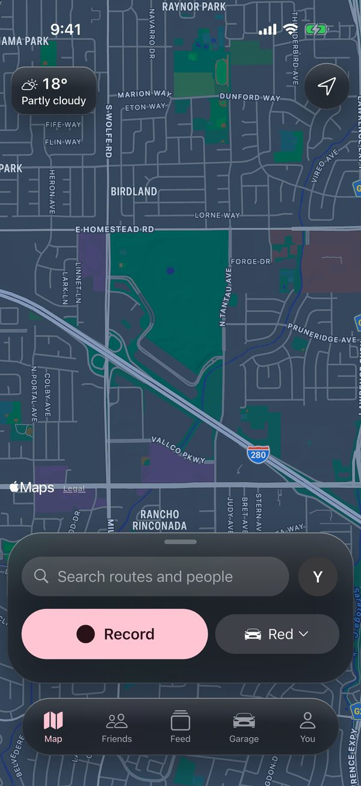
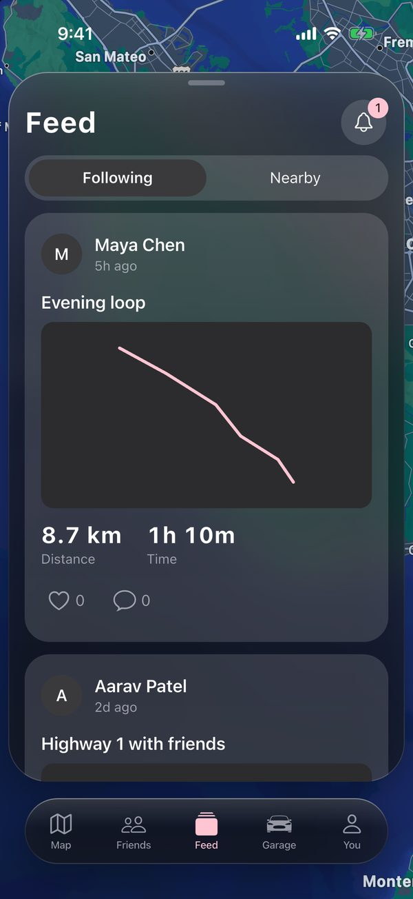
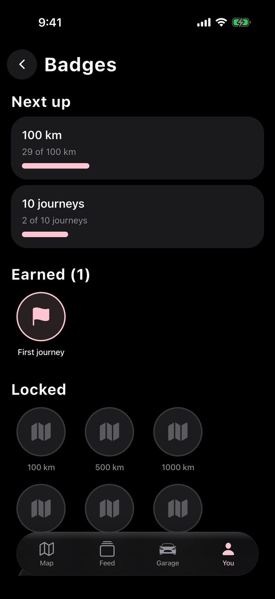

Record every journey
One tap to start. Wandr keeps recording offline, in the background, and even through a crash. Add photos, notes, mood and weather as you go.
Beta open on iPhone & Android
Wandr is a journal for drives and rides taken for the pleasure of it. Record a journey, relive it, share it, and ride together with friends on a live map.
Free to start. Works offline. Never ranks you by speed.
What it does
One tap to start. Wandr keeps recording offline, in the background, and even through a crash. Add photos, notes, mood and weather as you go.
Route, stats, photos and notes together in one beautiful journal entry.
Start a group ride and see everyone's position on one map. Hold a button to talk, walkie-talkie style, with no phone call to set up.
Journey cards in Story, Portrait or Square, ready for wherever you post.
Browse routes people have published, save them, and follow one as a line on the map.
Journeys, badges and new routes from people you follow and from nearby.
Every car and motorcycle you own, each with its own history of journeys.
Earn badges for distance, journeys and streaks. Opt in to monthly leaderboards. Based on distance, never speed.
Every December, a story-style look back: total distance, longest journey, favourite vehicle, new places and the people you rode with.
The app
Hit record and go. Wandr turns each drive or ride into a keepsake you can relive, share, and ride again with friends.





Screens from the app running on demo data. The group ride screen is a design concept.
How it works
Pick your car or bike and go. Wandr logs the route in the background, even with no signal.
Drop photos and notes on the way, then see the whole journey rendered as a keepsake when you stop.
Post a journey card, publish a route, or open a live group ride and bring your friends along.
About
Wandr started as a personal journal for drives and rides taken just for the pleasure of it. It rewards distance and showing up, never speed, and your average and top speed are only ever visible to you.
It's built by one person who loves a good road. Got feedback, a feature idea or a bug? Say hello.
FAQ
Yes. Recording, the journal, the garage, badges and group rides are free during the beta.
Recording, the journal, the garage and saved routes all work with no signal. Journeys sync when you're back online.
Wandr is built to keep recording in the background without keeping the screen on. A phone mount and charger on long drives is still a good idea.
You choose privacy per journey, and set a default in Settings. Your home location can be kept private too.
Never. Average and top speed are visible only to you. Badges and leaderboards are based on distance.
Start a ride, invite friends, and everyone appears on one live map. Hold the talk button to speak to the group, walkie-talkie style.
iPhone and Android phones. Android uses OpenStreetMap maps; iPhone uses Apple Maps.
Use the Join the beta buttons above: TestFlight on iPhone, Google Play testing on Android.
Wandr is in open beta on iPhone and Android. Join, take it on a drive, and tell us what you think.
Scan with your phone to get the app